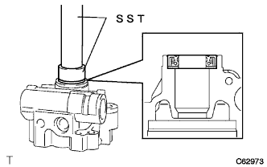
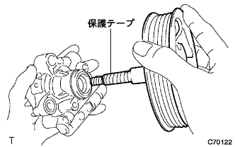
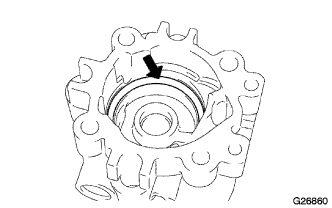
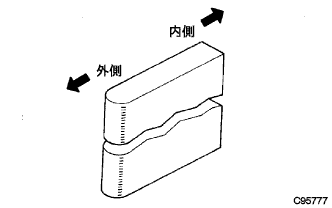
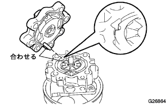
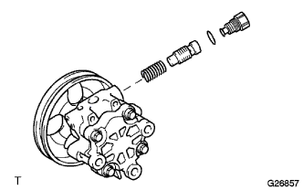

ベーン ポンプASSY 組み付け |
| 1. ベーンポンプハウジングオイルシール取り付け |
新品のハウジングオイルシールのリップ部に、少量のＭＰグリースNo.2を塗布する。
|  |
SSTおよびプレスを使用して、ハウジングオイルシールをハウジングフロント上端と一致するまで圧入する。
| 2. シャフトSUB-ASSY(プーリツキ)取り付け |
シャフトにパワーステアリングフルードを塗布する。
|  |
シャフトのスプライン部に保護テープを巻き、ハウジングフロントに取り付ける。
| 3. ベーンポンプサイドプレートフロント取り付け |
新品のサイドプレートOリングNo.2にパワーステアリングフルードを塗布する。
|  |
サイドプレートOリングNo.2をハウジングフロントに取り付ける。
新品のサイドプレートOリングNo.1にパワーステアリングフルードを塗布する。
 |
サイドプレートOリングNo.1をサイドプレートフロントに取り付ける。
 |
サイドプレートフロントの半円穴とハウジングフロントの半円穴を合わせ、サイドプレートフロントを取り付ける。
| 4. ベーンポンプカムリング取り付け |
 |
打刻マークを上にし、ベーンポンプカムリングの半円穴とサイドプレートフロントの半円穴を合わせ、ベーンポンプカムリングをハウジングフロントに取り付ける。
| 5. ベーンポンプロータ取り付け |
 |
ベーンポンプロータをハウジングフロントに取り付ける。
ベーンポンププレート10枚にパワーステアリングフルードを塗布する。
|  |
端面の丸い方を外側にして、べーンポンププレート10枚をベーンポンプロータに取り付ける。
| 6. ベーンポンプシャフトスナップリング取り付け |
 |
SSTおよびマイナス薄刃ドライバーを使用して、新品のシャフトスナップリングを取り付ける。
| 7. ベーンポンプハウジングリヤ取り付け |
新品のハウジングOリングにパワーステアリングフルードを塗布する。
|  |
ハウジングOリングをハウジングリヤに取り付ける。
ストレートピンをベーンポンプカムリングのピン穴に合わせ、ハウジングリヤをハウジングフロントに取り付ける。
 |
ボルト4本でハウジングリヤをハウジングフロントに取り付ける。
| 8. プレロード点検 |
シヤフトウイズプーリが円滑に回転し、異音がないことを確認する。
シヤフトウイズプーリにボルト(M10×P1.25)を取り付ける。
 |
シヤフトウイズプーリの回転トルクを点検する。
| 9. パワーステアリング オイル プレッシャ センサ取り付け |
Oリングにパワーステアリングフルードを塗布する。
オイルプレッシャセンサをハウジングフロントに取り付ける。
| 10. フローコントロールバルブ取り付け |
|  |
コンプレッションスプリングをハウジングフロントに取り付ける。
フローコントロールバルブにパワーステアリングフルードを塗布する。
フローコントロールバルブをハウジングフロントに取り付ける。
新品のプレッシャポートユニオンOリングにパワーステアリングフルードを塗布する。
プレッシャポートユニオンOリングをプレｯシャポートユニオンに取り付ける。
ソケットレンチ27ｍｍを使用して、プレッシャポートユニオンをハウジングフロントに取り付ける。
| 11. ポンプ ブラケット FR取り付け |
ポンプブラケットFRおよびポンプブラケットRRをボルト2本で取り付ける。
| 12. ベーンポンプオイル リザーバASSY取り付け |
新品のOリングにパワーステアリングフルードを塗布し、オイルリザーバASSYに取り付ける。
ボルト3本で、オイルリザーバASSYをベーンポンプハウジングに取り付ける。